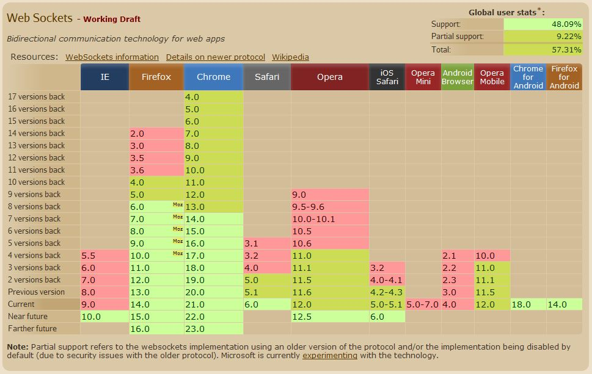
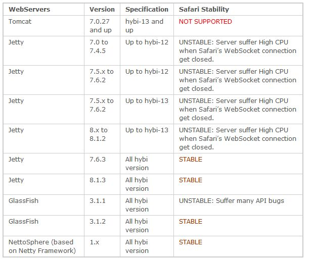

WebSockets
Eric Kizaki
*No longer just a HTML5 technology (IETF)
bi-directional, full-duplex
communications channels over a single TCP connection
"Reducing kilobytes of data to 2 bytes…and reducing latency from 150ms to 50ms is far more than marginal. In fact, these two factors alone are enough to make Web Sockets seriously interesting to Google."-Ian Hickson, HTML5 Specification lead

- A: 1000 clients
- B: 10,000 clients
- C: 100,000 clients
GET /mychat HTTP/1.1 Host: server.example.com Upgrade: websocket Connection: Upgrade Sec-WebSocket-Key: x3JJHMbDL1EzLkh9GBhXDw== Sec-WebSocket-Protocol: chat Sec-WebSocket-Version: 13 Origin: http://example.com
HTTP/1.1 101 Switching Protocols Upgrade: websocket Connection: Upgrade Sec-WebSocket-Accept: HSmrc0sMlYUkAGmm5OPpG2HaGWk= Sec-WebSocket-Protocol: chat
port 80 and 443 (HTTPS) - firewall same security issues as HTTP no magic ports required like Flash

if ('WebSocket' in window){
//create an object with some sub-protocols
//use wss for SSL
var connection = new WebSocket('ws://html5rocks.websocket.org/echo', ['soap', 'xmpp']);
// When the connection is open, send some data to the server
var message = {
'name': 'bill murray',
'comment': 'No one will ever believe you'
};
connection.onopen = function () {
connection.send(connection.send(JSON.stringify(message)));
};
connection.onerror = function (error) {
console.log('WebSocket Error ' + error);
};
// Log messages from the server
connection.onmessage = function (e) {
console.log('Server: ' + e.data);
};
// Sending canvas ImageData as ArrayBuffer
var img = canvas_context.getImageData(0, 0, 400, 320);
var binary = new Uint8Array(img.data.length);
for (var i = 0; i < img.data.length; i++) {
binary[i] = img.data[i];
}
connection.send(binary.buffer);
// Sending file as Blob
var file = document.querySelector('input[type="file"]').files[0];
connection.send(file);
}

